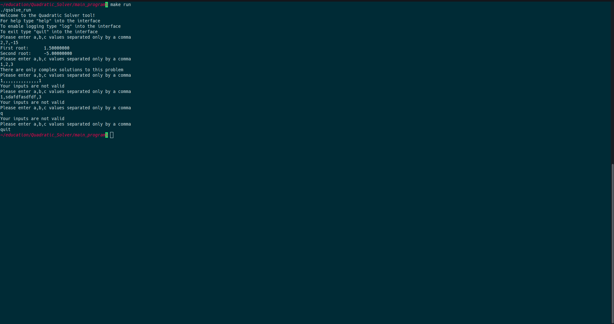

Quadratic Solver using C
- QuadSolver is a tool for solving quadratic equations.
- The program takes in three inputs: a,b,c. In that order and contains commas separating each value. The inputs must be to nine decimal places or less.
- In order to start the program with the output files generated, you must type: make run in the main_program directory.
- Then, the tool will return the solution to the three values entered if a solution exists.